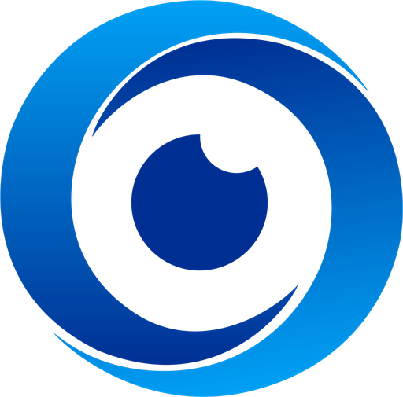
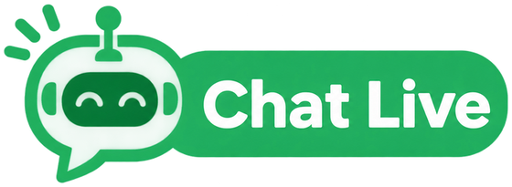

WordPress & custom development
Build websites with existing themes or tailored designs, customize with Elementor, create practical plugins, and handle technical maintenance, speed optimization and usability improvements.
I’m Taha Mahmoudi Khorsand. With over four years of professional experience, I work across WordPress web design, SEO, content production and digital marketing—alongside video editing, graphics and practical AI automation.
Selected teams and businesses I have collaborated with on development, design, content or digital growth.


I am a programmer and web developer with more than four years of professional experience in technology, web design and development. My work includes creating WordPress websites, website optimization and SEO, search-focused content and digital marketing.
I also have experience using artificial intelligence, designing and implementing AI-powered automations, and applying AI tools to improve workflow speed and quality. Beyond technical work, I edit videos and design and refine images and logos.
Combining technical skills, creativity and hands-on experience enables me to contribute from initial concepts and design through development, optimization, content production and final delivery. I continue learning and adopting current technologies to provide practical, professional, results-oriented solutions.
Understand the audience, design for usability, create purposeful content and improve continuously—guided by each project’s actual needs.
Website development, SEO, digital marketing, AI automation and collaboration with creative and content teams.
Website design and maintenance, software support and hardware-related work.
B.Sc. in Computer Engineering, as listed in the supplied résumé.
My main focus is WordPress, digital marketing, SEO and creative content. Programming is a supporting skill I use to solve real project problems.
Build websites with existing themes or tailored designs, customize with Elementor, create practical plugins, and handle technical maintenance, speed optimization and usability improvements.
Plan on-page and off-page SEO, review organic traffic and clicks, optimize conversion funnels, support advertising campaigns, and produce article and product content with AI assistance and human review.
Edit Instagram, educational, product and promotional videos; support filming, photography, graphic design, and the creation of realistic visual content with modern AI tools.
Through two years of work across Instagram projects, I have developed experience in concepts, scripts, content planning, promotional videos, motion graphics and audience engagement.
I have contributed to software projects of varying sizes. I work with Python, C#, JavaScript, React and Node.js, and use AI tools to support debugging, problem-solving and efficient implementation.
Understand the audience, goals and constraints.
Choose the right technical and content direction.
Design, produce and develop the deliverables.
Evaluate performance and iterate.
A selection of web, SEO, content, automation and performance projects. Open a project to see my specific contributions.
Led the digital launch team across website development, branding, sales strategy, SEO and Instagram management. Also covers video content production and Instagram branding.
Led SEO and content workflows; contributed to a custom CMS and the brand’s Instagram optimization. Also covers video content production and Instagram branding.
Built a business-trained assistant for web and Instagram inquiries, with handoff of complex cases to human support.
Collaborated on website development while leading search optimization and targeted content work.
Developed the WordPress website and contributed to backend architecture and application development.
Contributed to SEO, search visibility and visual elements for a currency-rate platform.
Website development and maintenance alongside software troubleshooting and PC hardware support.
Collaborated with the FomoTech team on selected UI and visual elements of its website.
Website, SEO and content work, plus AI automation in collaboration with social and video teams.
Collaboration with the pharmaceutical company Mazdisena Sam-Nosh-Daro on a news-style landing page presenting documents, evidence and press coverage showing that a drug circulated under the company's name was not its product.
Tools built for real project needs. Each plugin has a description, image gallery, feature list and its own detail page.
Custom WordPress order-status tracking to improve customer communication.
Tailored FAQ module with structured Schema markup for search-friendly content.
A dedicated space for upcoming plugins, documentation and previews.
A dedicated space for upcoming plugins, documentation and previews.
The download file has not yet been published.
Get in touch about WordPress projects, SEO, content, video production or digital marketing.